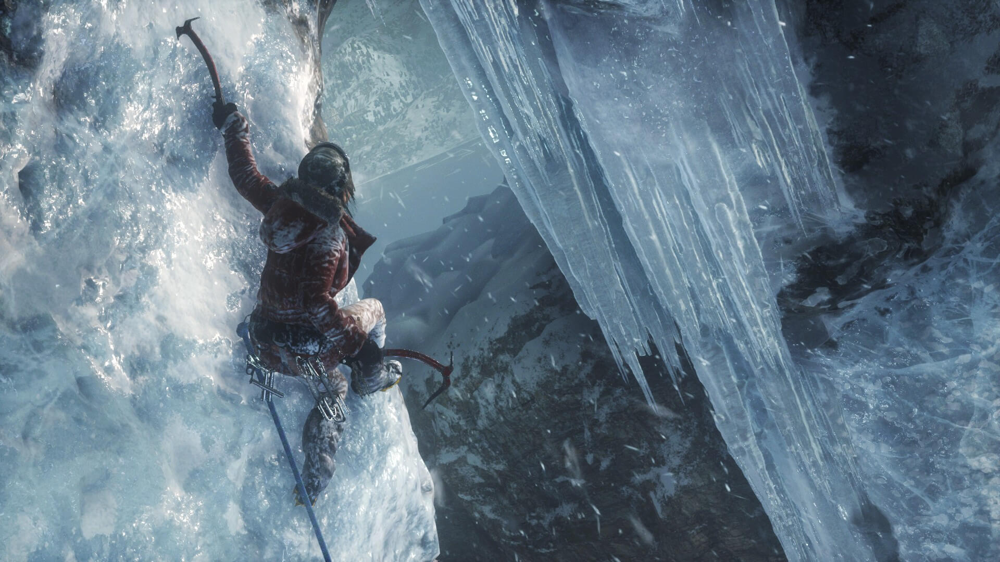
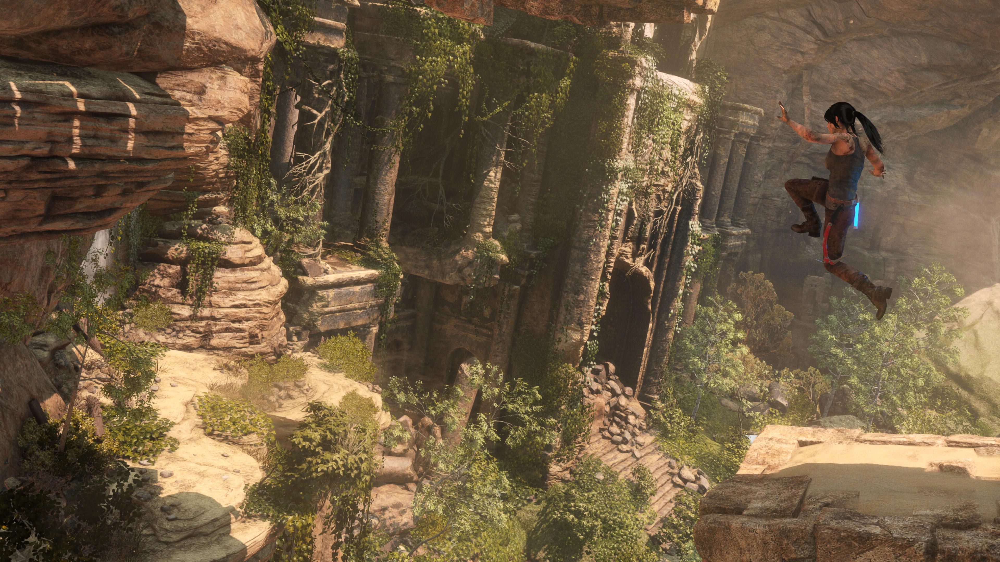

In the wake of her father’s death, Lara’s uncle challenges her ownership of Croft Manor. Lara must explore her childhood home in the new “Blood Ties” story mode to reclaim her legacy and uncover a family mystery that will change her life forever.
Title: Rise of the Tomb Raider 20 Year Celebration Pack
Genre: Action, Adventure
Developer: Crystal Dynamics
Publisher: Square Enix
Release Date: 11 Oct, 2016
Rise Of The Tomb Raider 20 Years Celebration-CPY Minimum System Requirements
Size: 33 GB
OS: Windows 7 64bit
Processor: Intel Core i3-2100 or AMD equivalent
Memory: 6 GB RAM
Graphics: NVIDIA GTX 650 2GB or AMD HD7770 2GB
DirectX: Version 11
Storage: 25 GB available space
Screenshots

